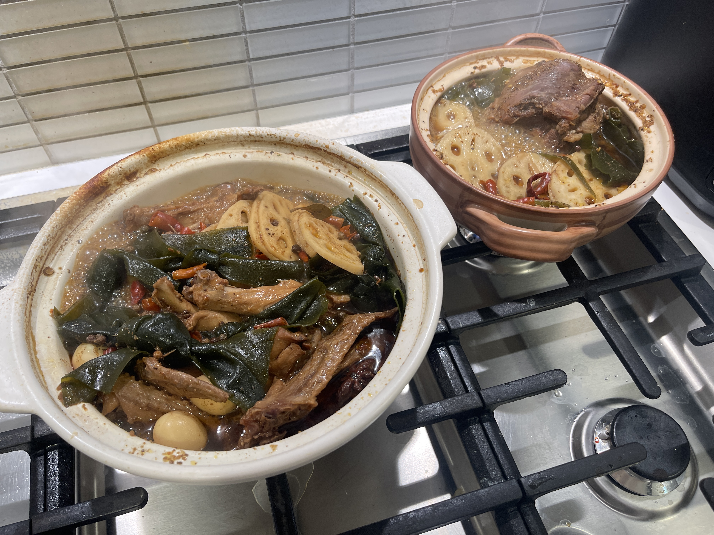
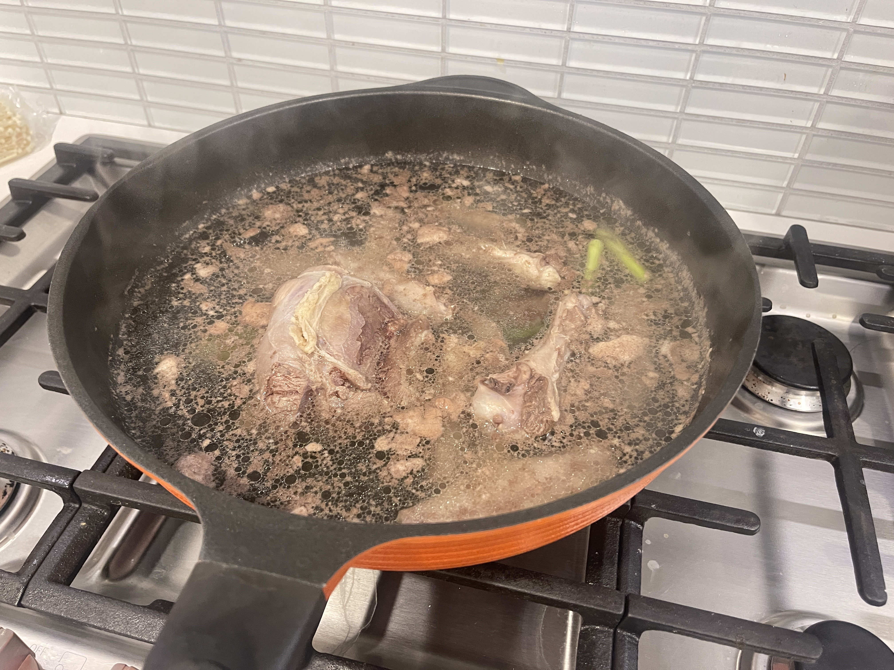
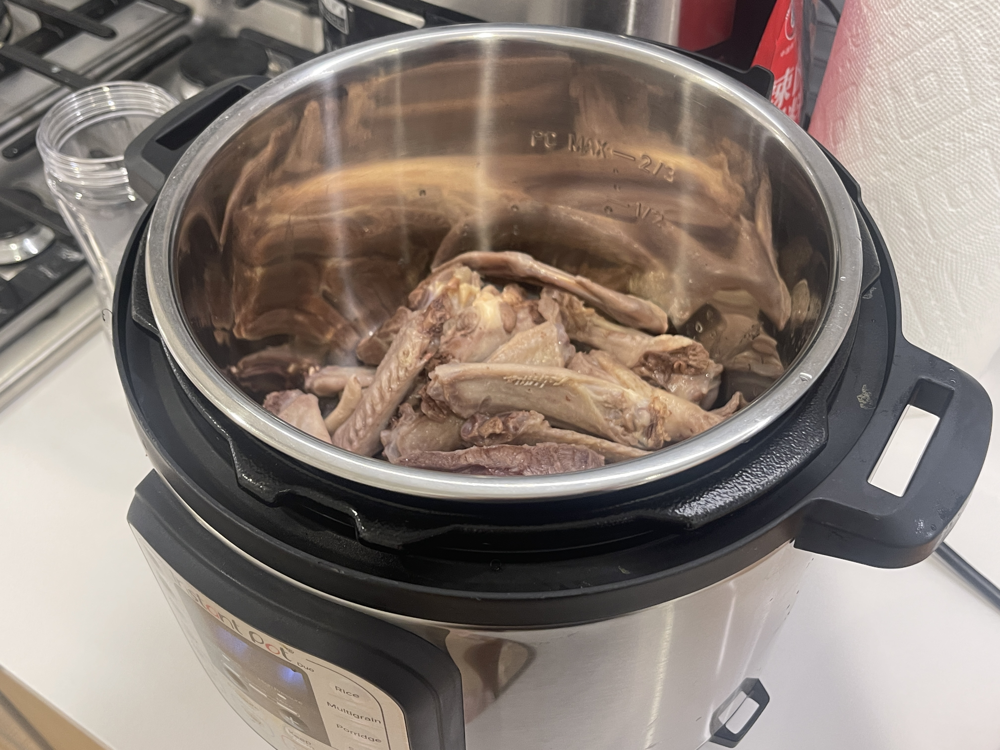
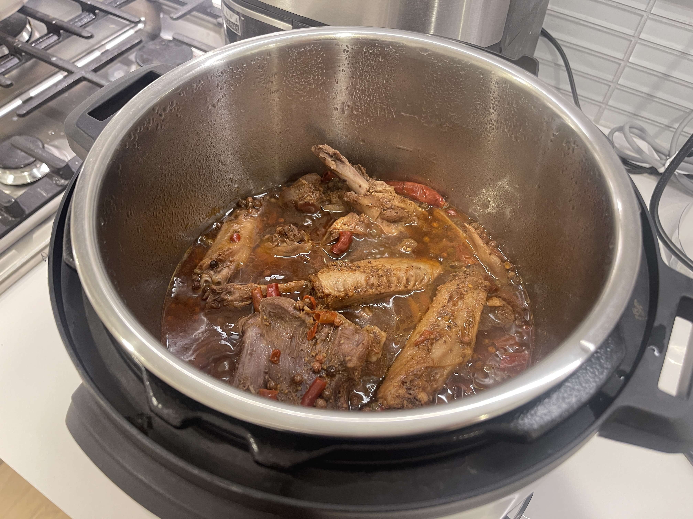
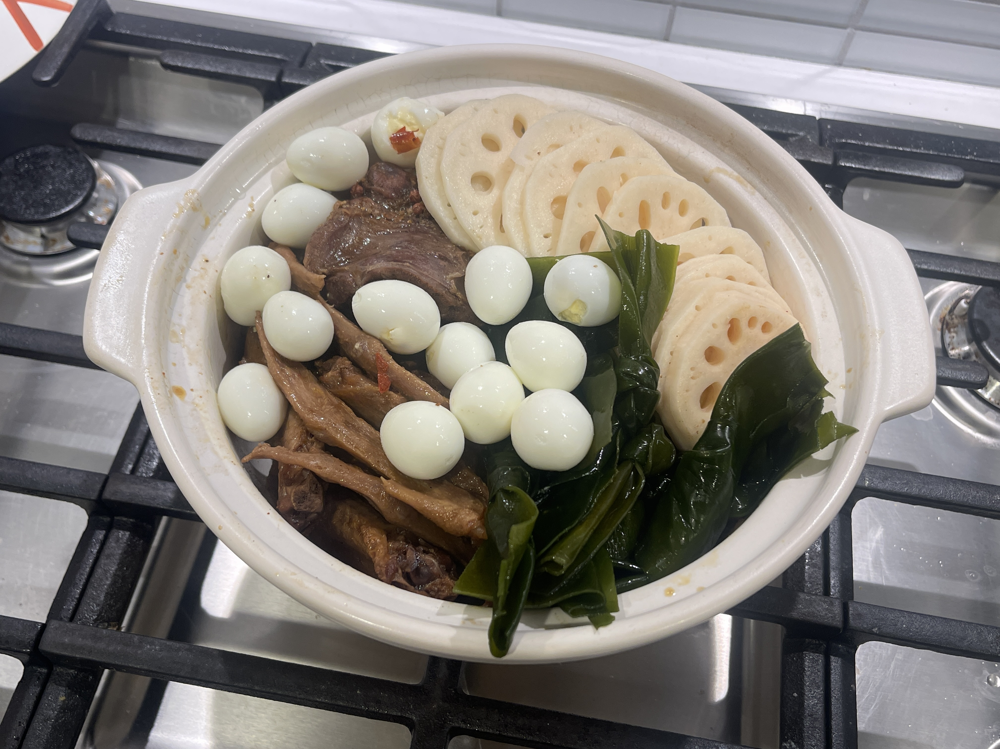
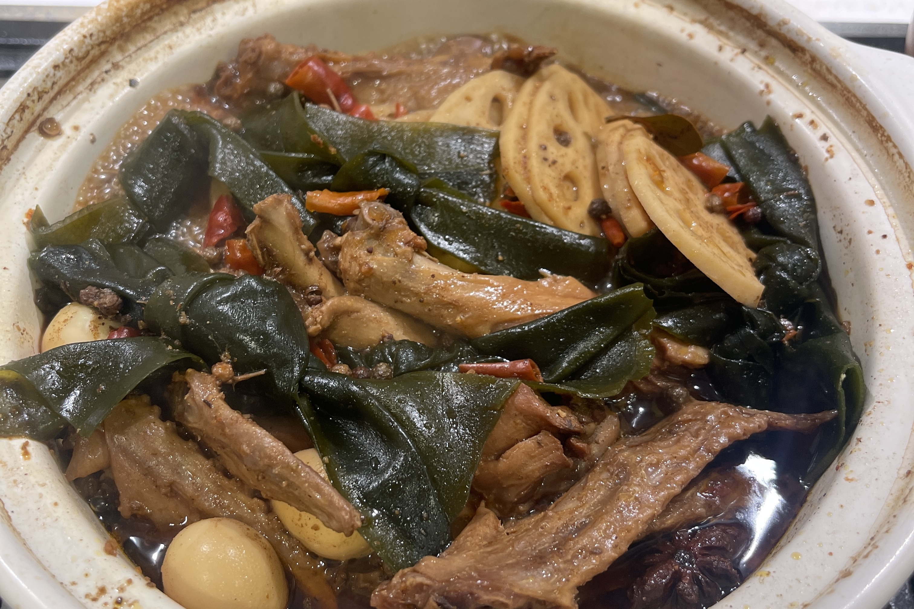

CORE I-INTERACTION

INGREDIENTS
Chili Seasoning Packets, Sichuan Peppercorns, Star Anise, Cinnamon, Dried Chili Peppers, Bay leaves, Crystal sugar, Meat, Vegetables
Lou mei
Pressure cooker version
卤制品（卤味）
THIS DISH IS RECOMMENDED BY COCO ZHANG
Lou mei are especially suitable as a late-night snack while watching TV series. It is one of Coco's favorite foods. Recently, she discovered that her favorite brand is no longer sold in Chinese supermarkets, so I decided to follow the tutorial and give it a try. " Lou mei is the Cantonese name given to dishes made by braising in a sauce known as a master stock or lou sauce. Lou mei can be made from meat, offal, and other off-cuts.

STEP 1: Add ginger and cold water to the meat and cook until foaming. I put duck wings and beef shank.

STEP 2: After skimming off the foam, place the meat in the pressure cooker.

STEP 3: Add oil and chili seasoning packets to the pot.

STEP 4: Add all other spices.

STEP 5: When the water boils, pour the seasoning and soup directly
STEP 5: When the water boils, pour the seasoning and soup directly
into the pressure
cooker to cover all the meat in the pot. Cook in MEET mode for 20 minutes.

STEP 6: Take the meat out of the pressure cooker, place it in a casserole and put vegetables/easy-to-cook foods. (I put kelp, lotus root slices and quail eggs)

STEP 7: Pour the remaining stock from the pressure cooker into the set casserole.
Cook for 15-30 minutes depending on the ingredients.
